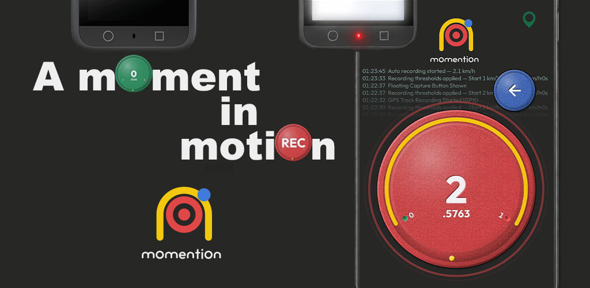
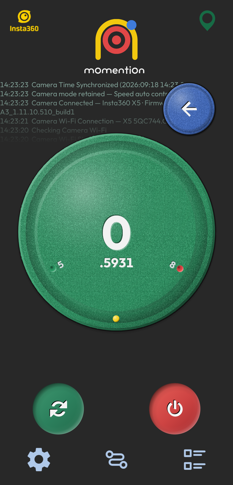

속도에 맞춘 자동 녹화
시작·정지 속도와 유지 시간을 설정하세요. GPS 속도 조건에 따라 연결된 카메라의 녹화를 제어합니다.
속도 기반 원격 자동 녹화
주행에 집중하는 동안 mOmentiOn이 속도에 맞춰
액션캠 녹화를 원격으로 시작하고 정지합니다.
Android 10 이상 · Google Play 비공개 테스트 진행 중
A Moment in Motion
A CLOSER LOOK
설정한 속도에 도달하면 녹화를 시작하고,
정차하면 마무리합니다.

AUTO RECORD
주행에 집중하는 동안 mOmentiOn이 속도에 맞춰 액션캠 녹화를 원격으로 시작하고 정지합니다.



선택한 카메라의 로고가 표시됩니다. 연결 중 탭하면 브랜드를 전환 가능합니다.
GPS 수신 상태를 표시합니다. 탭하면 속도 모니터링을 켜거나 끄며 카메라 연결은 유지됩니다.
연결과 녹화 동작을 영어로 기록합니다. 최신 내역이 위에 표시됩니다.
플로팅 버튼으로 앱 제어가 가능해집니다.
녹색은 카메라 연결·녹화 대기, 빨간색은 녹화 중임을 알립니다. 수동 녹화도 지원합니다.
빨간 점 표시 숫자는 설정된 녹화 시작 속도, 초록 점 표시 숫자는 설정된 녹화 정지 속도입니다.
노란 점은 휴대폰의 중력 방향에 따라 이동합니다.
연결 작업을 시작하거나 재시도합니다. 작업 진행 중 다시 누르면 취소합니다.
모든 서비스를 종료하고 앱을 즉시 종료합니다.
카메라 연결, 녹화 기준 속도와 앱 동작을 설정합니다.
저장한 주행 경로를 확인하고 비교·공유합니다.
저장된 로그를 열어 동작 내역을 확인합니다.

MY DRIVE
이동 경로, 시간, 거리와 속도 변화를 함께 확인합니다.

ANALYZE
히트맵 위치와 그래프 값을 맞춰 보며 주행 흐름을 살펴보세요.

COMPARE
여러 경로의 속도와 경과 시간을 한 화면에서 비교합니다.
BUILT AROUND YOUR DRIVE
시작·정지 속도와 유지 시간을 설정하세요. GPS 속도 조건에 따라 연결된 카메라의 녹화를 제어합니다.
주변 Wi-Fi 목록에서 카메라를 선택하고 연결 정보를 저장합니다. 연결이 끊기면 자동으로 재연결을 시도합니다.
이동 경로와 속도를 기록하고, 속도별 히트맵으로 확인하세요. 기록한 경로를 확대하고 회전하며 살펴볼 수 있습니다.
여러 기록의 속도와 경과 시간을 비교합니다. 경로별 표시를 선택하고 그래프를 확대해 차이를 확인하세요.
경로 요약 이미지를 공유하고, 히트맵 재생을 영상으로 저장합니다. 히트맵만 또는 그래프를 포함한 출력을 선택하세요.
GPX, 로그, 공유 결과물을 선택한 폴더에 보관하세요. 소중한 경로는 잠금으로 보호할 수 있습니다.
QUICK START
카메라와 휴대폰을 연결한 뒤
원하는 녹화 조건을 설정하세요.
앱의 권한 안내에 따라 필요한 권한을 허용하고 기록을 보관할 폴더를 선택합니다.
카메라 Wi-Fi를 켜고 앱 설정에서 카메라 종류, SSID와 비밀번호를 확인합니다.
녹화 시작·정지 속도와 유지 시간을 정합니다. 출발 전 GPS와 카메라 연결 상태를 확인하세요.
주행 후 경로 목록에서 기록을 열어 히트맵을 확인하고 이미지 또는 영상으로 공유합니다.
READY FOR YOUR NEXT DRIVE
현재 Google Play 비공개 테스트를 진행하고 있습니다.
테스터 등록에 사용한 Google 계정으로 참여한 뒤 앱을 설치할 수 있습니다.
Android 10 이상 · 비공개 테스트 참여 승인이 필요합니다.
카메라 지원 범위는 모델과 펌웨어에 따라 달라질 수 있습니다.